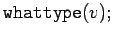
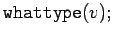

Inhalt Index DeskTop Bronstein

 Computeralgebrasysteme Maple Tabellen- und feldartige Strukturen, Vektoren und Matrizen
Computeralgebrasysteme Maple Tabellen- und feldartige Strukturen, Vektoren und Matrizen


Mit erzeugt man z.B. ein eindimensionales Array der Länge 5 ohne explizite Elemente, mit ebenfalls, jedoch mit den angegebenen Komponenten. Solche eindimensionalen Arrays interpretiert Maple auch als Vektoren. Mit der Typprüfungsfunktion  erhält man
erhält man  . Fragt man jedoch , so wird daraus . Das hängt mit der schon erwähnten Spezialform der Evaluierung zusammen.
. Fragt man jedoch , so wird daraus . Das hängt mit der schon erwähnten Spezialform der Evaluierung zusammen.